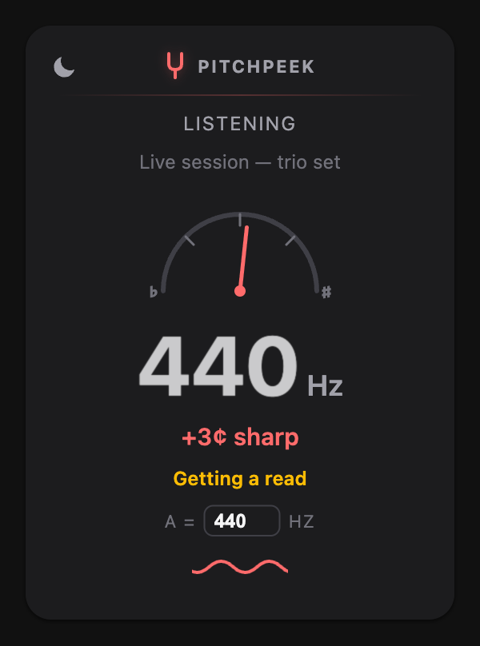
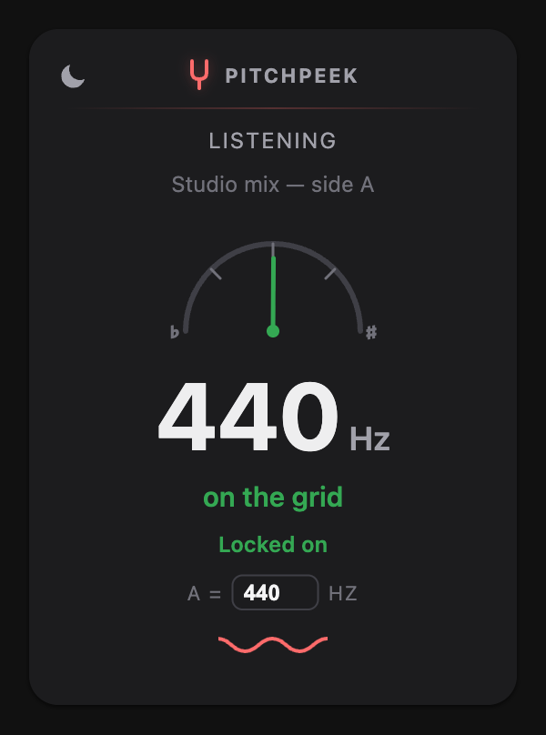
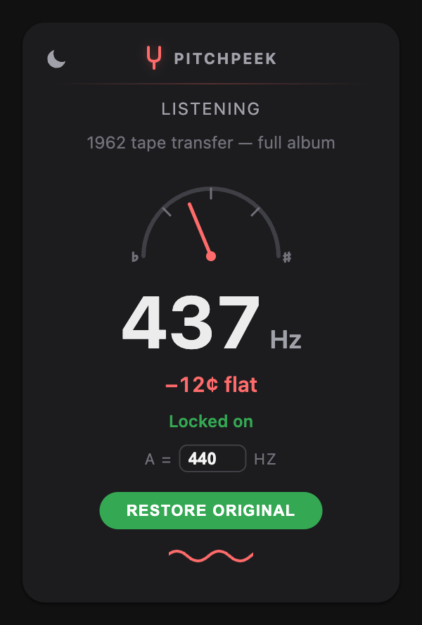

A tuner for
recordings, not strings
Every note in a recording is measured against the A=440 grid. PitchPeek folds those distances into one distribution, finds where the mass actually sits, and reports the reference the recording was made at — 440, 442, 438, 432.
The needle and the cents line show direction and distance — "+8¢ sharp", "−31¢ flat", or "on the grid" when it lands where it should.
One click retunes the tab's audio to your reference in real time, so you can play along without retuning your instrument. Click again to restore the original.
Orchestra tunes to 442? Set anything from 430 to 450 Hz. Every reading — and every correction — re-baselines to it.
It listens first,
then commits



Tuning doesn't drift.
So it converges.
Tempo can legitimately change across a song, so GroovePeek keeps re-reading. A recording's tuning reference doesn't — it was fixed when the record was cut. PitchPeek treats it that way: it accumulates evidence from every second of audio into one growing picture, and once enough has integrated it locks and stops moving. Integrating over the whole song is also what beats the second-to-second jitter you'd get from any single window.
The reading is content-dependent. Instruments produce overtones that don't sit on the equal-tempered grid — a fifth harmonic lands about 14 cents flat of one — so in sparse or overtone-heavy passages those partials can pull the estimate a little off the true reference. Expect roughly ±13 cents on real material, sometimes more on sparse recordings.
That's good enough to tell 432 from 440 from 442 with confidence, and to answer "why does this sound flat?". It is not a substitute for a hardware tuner on a single sustained note.
For anyone playing
along with a recording
Found out the hard way that the track is a semitone-ish off? Now you know by how much — and you can pull it back instead of retuning.
Ensembles tune to 442 or 443 as often as 440. Set your reference and read every recording against it.
Tape transfers and old masters drift. A quick read tells you whether a rip was pitched correctly.
Plenty of uploads claim to be retuned. This tells you whether they actually are.
Your privacy, protected
PitchPeek analyzes the tab's audio in memory and discards it. Nothing is recorded, uploaded, or tracked. The only things kept on your machine are your theme choice and your reference pitch. Pitch correction changes what you hear in that tab, and only while you have it turned on.
Read the full privacy policy →What's this tuned to?
PitchPeek is on its way to the Chrome Web Store.
Want the tempo instead? Meet GroovePeek →